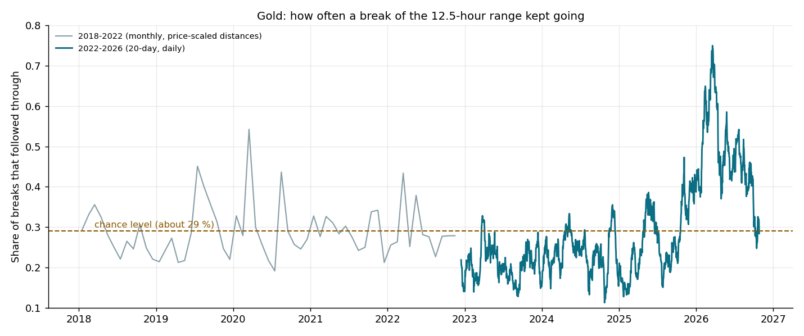

Gold range breakouts: measuring follow-through
A range breakout earns when price keeps going after it breaks out, and loses when the break fades straight back. That sounds obvious, but how often a break keeps going changes a great deal from one period of the market to the next. We measure it directly, from price alone, and use it to decide when our breakout research systems should trade at all.
What we measure
We take the highest high and lowest low of the last 50 closed 15-minute bars of gold (12.5 hours). Each time price first touches the inside edge of that range, one dollar short of the extreme, we ask one question: did price run a further two dollars before it pulled back one dollar? If yes, the break followed through. We count these events for every break, never twice within an hour on the same side, and report the share that followed through over a rolling 20 days.
Two properties matter. The measure uses only price, so it does not depend on any one strategy's trades. And it has a natural reference point: with the stop and target distances we test, a break that behaves like a coin flip follows through about 29 % of the time. Above that, breakouts pay; below it, they bleed.

What the record shows
From late 2022 to late 2025 the share sat between 15 % and 29 % in almost every month, with brief visits above the chance level (measured on broker tick data, gold, 2022-11 to 2025-09). From October 2025 it stayed above it for a year, peaking near 70 % in March 2026 (measured on broker tick data, gold, 2025-10 to 2026-03). Earlier history, rescaled to today's price level so the dollar distances mean the same thing, shows the same pattern: long stretches at or below chance, with short bursts above it (measured on two older tick archives, gold, 2018 to 2025).
The share tracks how a range-breakout strategy performed month by month in our own tests: strongest when the share was highest, flat when it was near chance.
Where it stands now
The 20-day share was 28 % on 26 October 2026, just under the chance level, after eight months above it (measured on broker tick data, gold, 2026-10-26). A system that waits for follow-through to be above chance would be standing aside at this moment, and would start again by itself when breaks begin to follow through.
How we use it
Our gold breakout systems trade only while the 20-day share is at or above the chance level, and they size a little larger when it is high and smaller when it is low. In our tests this removed most of the losses of the quiet years while leaving the trending year intact. We are careful about what that proves: the whole record contains only one or two clear swings between breakouts working and not working, so the measure is a well-grounded guide, not a guarantee. We keep checking it, month by month, on new data.
It is also a measure of the market, not of any one system. It says nothing about direction, and it can sit near chance for months in calm, range-bound gold.